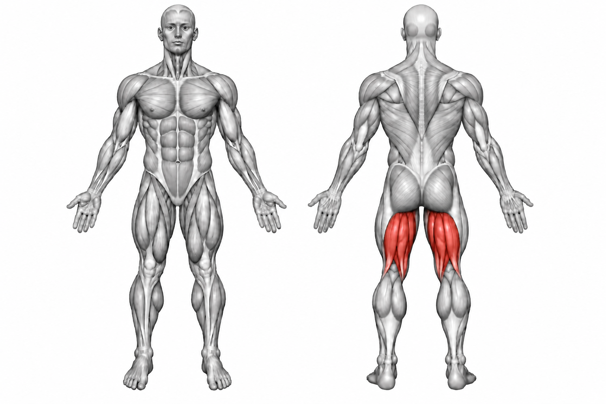
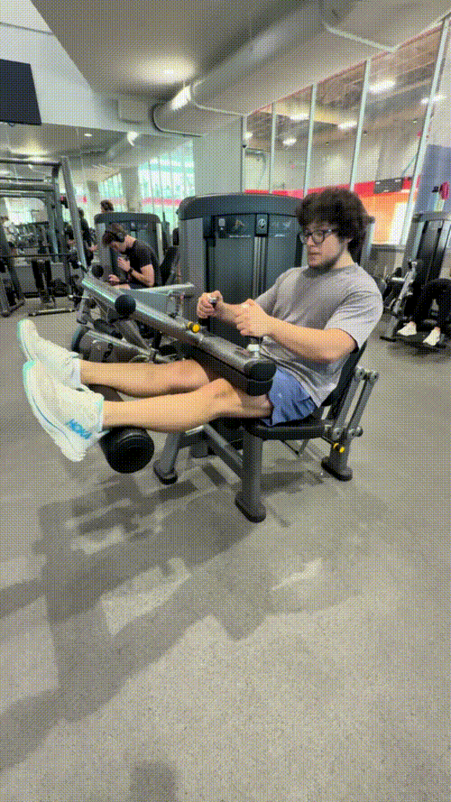

Leg Curl


How to Perform
Position yourself securely in the leg curl machine with your knees aligned with the machine's pivot point. Place the lower part of your legs against the resistance pad.
Curl your lower legs toward your body by bending your knees. Squeeze your hamstrings at the end of the movement, then slowly return your legs to the starting position.
Primary Muscles
Hamstrings (Hamstrings)
Secondary Muscles
Gastrocnemius (Calves)